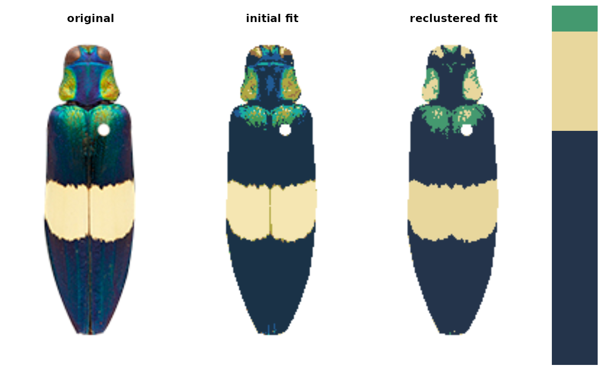
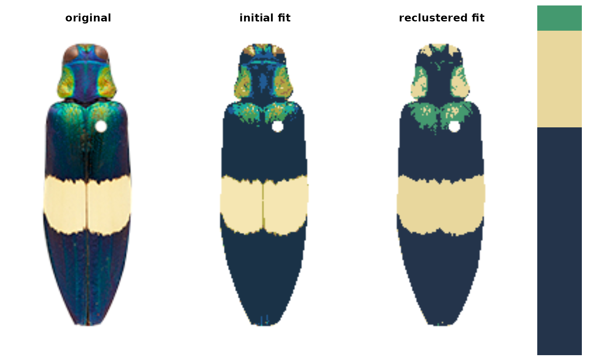

Rerun the sequence of calls used to produce a recolorize object
Source:R/rerun_recolorize.R
rerun_recolorize.RdEvaluates the series of calls in the 'call' element of a recolorize object, either on the original image (default) or on another image. It will almost always be easier (and better practice) to define a new function that calls a series of recolorize function in order than to use this function!
Arguments
- recolorize_obj
An object of S3 class 'recolorize'.
- img
The image on which to call the recolorize functions. If left as "original" (the default), functions are called on the original image stored in the recolorize object. Otherwise can be an object taken by the
imgargument of recolorize functions (a path to an image or an image array).
Details
This function utilizes eval statements to evaluate the calls
that were stored in the call element of the specified recolorize object.
This makes it potentially more unpredictable than simply defining your own
function, which is preferable.
Examples
# list images
corbetti <- system.file("extdata/corbetti.png", package = "recolorize")
chongi <- system.file("extdata/chongi.png", package = "recolorize")
# fit a recolorize object by running two functions in a row:
rc <- recolorize(corbetti, bins = 2, plotting = FALSE)
#>
#> Using 2^3 = 8 total bins
rc <- recluster(rc, cutoff = 45)

 # check out the call structure (a list of commands that were run):
rc$call
#> [[1]]
#> recolorize(img = corbetti, bins = 2, plotting = FALSE)
#>
#> [[2]]
#> recluster(recolorize_obj = rc, cutoff = 45)
#>
# we can rerun the analysis on the same image (bit pointless):
rerun <- rerun_recolorize(rc)
#>
#> Using 2^3 = 8 total bins
# check out the call structure (a list of commands that were run):
rc$call
#> [[1]]
#> recolorize(img = corbetti, bins = 2, plotting = FALSE)
#>
#> [[2]]
#> recluster(recolorize_obj = rc, cutoff = 45)
#>
# we can rerun the analysis on the same image (bit pointless):
rerun <- rerun_recolorize(rc)
#>
#> Using 2^3 = 8 total bins
 # or, we can rerun it on a new image:
rerun_chongi <- rerun_recolorize(rc, img = chongi)
#>
#> Using 2^3 = 8 total bins
# or, we can rerun it on a new image:
rerun_chongi <- rerun_recolorize(rc, img = chongi)
#>
#> Using 2^3 = 8 total bins
 
